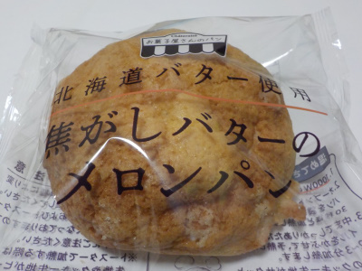
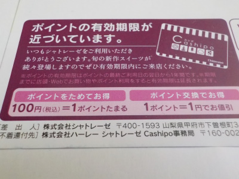
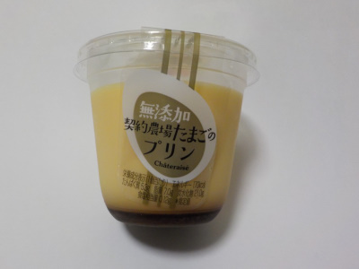

シャトレーゼのメロンパンは美味しいです。
2022/06/06

メロンパンっぽくないメロンパンですが、バターが効いてて美味しかったです。
私はメロンパンが特に好きではないのでそう思うのかもしれません。
メロンパン好きな人はどう思うんでしょうね？
住所 あちこち
2022/06/06

メロンパンっぽくないメロンパンですが、バターが効いてて美味しかったです。
私はメロンパンが特に好きではないのでそう思うのかもしれません。
メロンパン好きな人はどう思うんでしょうね？
2022/05/27

葉書料金使ってお知らせするって、凄い親切ですね。
教えてもらったポイントは消失しないように、近いうちに買い物に行こうと思っています。
葉書に載ってたアイスクリームはたぶん買うと思います。他は何を買おうかな。
2021/06/07

小さいですがカスタードプリンが108円でした。
近頃は高額プリンが多く販売しているので、この価格はうれしいです。カスタードプリンらしいシンプルな味で美味しかったです。
普通にプリン食べたいって時はこんなのが一番だなって思いました。
このプリンは小さいのでちょっともの足りない。でも値段が上がったら魅力が下がる。そう考えるとちょうどいいサイズと価格かな。
ケーキ屋さんとかお菓子屋さんのプリンは無添加が当たり前だと思っていましたが、わざわざ書いてあるってことは添加物が入った商品が多くあるって事なんでしょうか。原材料がそもそも書かれていないお店が多いので、添加物があるかないかってわかりませんね。
人気ありますね。